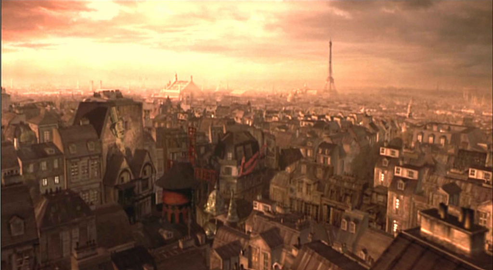
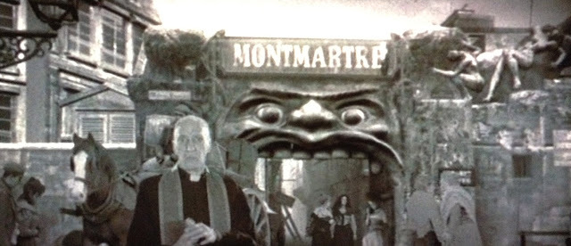
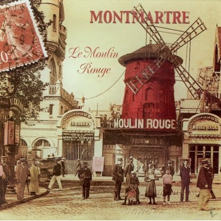

In the year 1900, a British writer named Christian, suffering from depression, begins writing on his typewriter. As Christian narrates, the film flashes back to one year earlier upon Christian's move to the Montmartre district of Paris to become a writer among members of the area's Bohemian movement.
Christian: I first came to Paris one year ago. It was 1899, the Summer of Love. I knew nothing of the Moulin Rouge, its favourite courtisan Satine or the director Ziedler.
The world had been swept up in a Bohemian revolution. And I had travelled from London to Paris to be a part of it.
On the hill near Paris was the village of Montmartre. It was not as my father said - a village of sin - but the center of Bohemian world. The musicians, painters, writers. They were known as a Children of the Revolution. and The Moulin Rouge.
A nightclub, a dancehall and the bordello ruled over by Harold Ziedler. A kingdom of nighttime pleasures, where the rich and powerful came to play with the young and beautiful creatures of the underworld. The most beautiful of all these was the woman who I loved.
